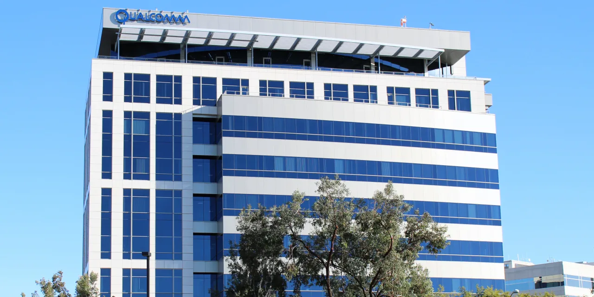

퀄컴을 볼 때 많은 투자자가 먼저 떠올리는 것은 스마트폰입니다. 그 판단은 틀리지 않습니다. 아직도 퀄컴의 가장 큰 매출 축은 핸드셋 반도체이고, 프리미엄 안드로이드 스마트폰 사이클과 중국 고객 수요는 주가에 큰 영향을 줍니다. 다만 지금 퀄컴 주주가 정말 궁금해할 질문은 단순합니다. 스마트폰이 회복되면 충분한가, 아니면 자동차와 IoT가 새로운 반복 매출 축으로 자리를 잡아야 하는가입니다.
퀄컴의 FY2026 2분기 실적 자료를 보면 회사의 매출은 105억 9,900만 달러였습니다. QCT 매출은 90억 7,600만 달러였고, 그 안에서 Handsets 매출은 60억 2,400만 달러로 전년 대비 13% 감소했습니다. 반대로 Automotive 매출은 13억 2,600만 달러로 38% 증가했고, IoT 매출은 17억 2,600만 달러로 9% 늘었습니다. 숫자만 보면 핸드셋은 부담이고, 자동차와 IoT는 완충 장치입니다.
이 글의 핵심은 퀄컴을 “모바일 칩 회사” 한마디로만 보지 않는 데 있습니다. 스마트폰 반등은 여전히 중요하지만, 주가가 더 오래 버티려면 자동차와 IoT 매출이 일회성 설계 수주가 아니라 실제 출하와 반복 고객으로 바뀌어야 합니다. 반도체 기업은 발표보다 양산, 양산보다 고객 예산, 고객 예산보다 다음 세대에도 남는 설계 채택이 중요합니다.
핸드셋은 바닥보다 회복의 질이 중요합니다

퀄컴 핸드셋 사업에서 중요한 것은 “바닥을 찍었다”는 말 자체가 아니라 회복의 질입니다. 회사는 FY2026 3분기 가이던스에서 중국 고객의 QCT 핸드셋 매출이 3분기에 바닥을 찍고 이후 순차 성장으로 돌아올 수 있다고 설명했습니다. 이 표현은 반가운 신호이지만, 투자자가 바로 매출 회복을 확신하기에는 아직 확인할 것이 많습니다. 프리미엄 안드로이드 교체 주기, 중국 브랜드의 재고, 메모리 가격과 공급, 지역별 프로모션 비용이 함께 맞아야 합니다.
퀄컴의 핸드셋 반도체는 단순 부품이 아닙니다. 모뎀, 애플리케이션 프로세서, 무선 연결, 전력 효율, AI 연산이 묶인 플랫폼입니다. 그래서 한 번 채택되면 기기 설계 안에 깊게 들어가지만, 동시에 고객이 가격을 강하게 압박할 수 있는 영역이기도 합니다. 애플이 자체 모뎀 비중을 높이려는 흐름도 장기 리스크입니다. 당장 모든 매출이 사라진다는 뜻은 아니지만, 투자자는 애플 노출이 줄어드는 속도와 안드로이드 프리미엄 고객의 보완 능력을 같이 봐야 합니다.
스마트폰 회복이 좋은 신호가 되려면 출하량보다 혼합 판매단가가 중요합니다. 저가형 물량만 늘면 매출은 회복돼도 마진이 약할 수 있습니다. 반대로 프리미엄 기기에서 Snapdragon 플랫폼 채택이 이어지고, 온디바이스 AI 기능이 실제 구매 이유가 되면 퀄컴은 단순 사이클 반등 이상의 가격 방어력을 얻을 수 있습니다. 다음 분기 확인 지표는 Handsets 매출의 순차 성장률, QCT 마진, 중국 고객 코멘트, 프리미엄 안드로이드 신제품 채택입니다.
자동차 매출은 수주가 아니라 탑재 속도를 봐야 합니다
관련 영상
Qualcomm Investor Day 2024: IoT and Automotive Diversification Update
자동차 부문은 퀄컴이 가장 설득력 있게 보여주는 다변화 축입니다. FY2026 2분기 Automotive 매출은 13억 2,600만 달러로 전년 대비 38% 증가했습니다. 이 성장은 단순히 자동차 산업이 커져서 나온 것이 아니라, 차량 안에 들어가는 컴퓨팅 영역이 넓어졌기 때문에 가능합니다. 디지털 콕핏, 운전자 보조, 연결성, 차량 내 인포테인먼트, 소프트웨어 업데이트가 모두 반도체와 통신 플랫폼을 요구합니다.
하지만 자동차 반도체 매출은 스마트폰처럼 빠르게 움직이지 않습니다. 설계 채택에서 실제 차량 출하까지 시간이 걸리고, 완성차 고객은 안전 인증과 장기 공급 안정성을 매우 엄격하게 봅니다. 그래서 자동차 부문에서 투자자가 봐야 할 것은 “수주 규모가 크다”는 문장보다 실제 탑재 모델 수, 출하 차종, 고객 다변화, 차량당 콘텐츠 증가입니다. 퀄컴의 Snapdragon Digital Chassis가 더 많은 차에 들어간다면 자동차 매출은 주기가 긴 반복 매출에 가까워질 수 있습니다.
자동차 사업의 장점은 한 번 들어가면 교체가 어렵다는 점입니다. 단점도 같습니다. 완성차 고객의 플랫폼 전환이 늦어지면 매출 전환도 늦습니다. 경기 둔화로 자동차 생산이 줄거나 전기차 투자 속도가 느려지면, 퀄컴의 자동차 성장률도 흔들릴 수 있습니다. 좋은 자동차 매출은 발표자료 안의 파이프라인이 아니라 실제 양산 일정과 고객별 매출 전환에서 확인됩니다. 이 부분이 계속 쌓이면 퀄컴은 스마트폰 사이클에 덜 흔들리는 회사가 됩니다.
IoT와 엣지 AI는 이름보다 고객 예산이 중요합니다
IoT 매출은 17억 2,600만 달러로 전년 대비 9% 증가했습니다. 이 숫자는 자동차처럼 눈에 띄게 빠르지는 않지만, 퀄컴이 넓은 산업 고객을 확보할 수 있는 영역입니다. 산업용 단말, 네트워크 장비, 리테일 기기, 카메라, 태블릿, 엣지 AI 장치, 로봇, 스마트 공장 장비에는 통신과 저전력 컴퓨팅이 함께 필요합니다. 퀄컴은 이 지점에서 모바일 기술을 다른 기기로 확장하려 합니다.
다만 IoT는 너무 넓은 단어입니다. 투자자가 조심해야 할 부분도 여기에 있습니다. IoT라고 적힌 모든 수요가 고마진 반복 매출은 아닙니다. 일부는 경기와 재고에 민감하고, 일부는 고객사가 자체 설계나 더 저렴한 대안을 찾을 수 있습니다. 엣지 AI 역시 데모 영상만으로는 매출이 되지 않습니다. 실제 고객이 클라우드 비용을 줄이거나 지연 시간을 낮추기 위해 장치 안에서 AI 추론을 돌릴 때, 그리고 그 기능이 제품 가격을 올려도 팔릴 때 의미가 있습니다.
퀄컴이 IoT에서 강해지려면 세 가지가 필요합니다. 첫째, 산업 고객이 매년 교체하거나 확장하는 장비 안에 들어가야 합니다. 둘째, 단순 칩 판매를 넘어 소프트웨어 도구와 레퍼런스 설계를 제공해야 합니다. 셋째, 브로드컴, 엔비디아, 미디어텍, 자체 칩 설계와 비교해 전력 효율과 연결성에서 분명한 이점을 보여야 합니다. IoT 매출이 천천히라도 안정적으로 늘고 QCT 마진을 지키면, 이 부문은 핸드셋 변동성을 줄이는 데 실제 도움이 됩니다.
라이선스와 애플 리스크가 밸류에이션을 가릅니다
퀄컴을 평가할 때 QTL 라이선스 사업은 빼놓을 수 없습니다. QCT가 칩을 파는 사업이라면, QTL은 특허와 기술 라이선스에서 수익을 얻는 사업입니다. 이 사업은 퀄컴의 무선 통신 기술력이 오랫동안 쌓인 결과이고, 매출 규모만큼이나 이익의 질에서 중요합니다. 스마트폰 시장이 성숙해도 통신 표준과 특허 포트폴리오가 유지되면, 라이선스는 회사 전체 수익성을 지키는 완충 장치가 될 수 있습니다.
하지만 라이선스 사업은 규제와 소송, 고객 협상에 민감합니다. 과거에도 퀄컴은 여러 지역에서 라이선스 구조를 둘러싼 압박을 받았습니다. 앞으로도 통신 표준, 특허 사용료, 대형 고객과의 계약 갱신은 주가 변동 요인이 될 수 있습니다. 그래서 투자자는 QTL 매출이 안정적인지, QCT의 제품 매출 둔화를 얼마나 보완하는지, 대형 고객과의 계약이 어떤 조건으로 이어지는지를 확인해야 합니다.
애플 모뎀 리스크도 같은 맥락에서 봐야 합니다. 애플이 자체 통신칩을 확대하면 퀄컴의 일부 핸드셋 매출은 압박을 받을 수 있습니다. 다만 애플 리스크만으로 퀄컴 전체를 판단하는 것도 지나칩니다. 자동차, IoT, 안드로이드 프리미엄, QTL이 같이 버티면 애플 노출 감소는 관리 가능한 리스크가 될 수 있습니다. 반대로 자동차와 IoT가 기대만큼 커지지 않고 핸드셋 의존도가 계속 높으면, 애플 리스크는 밸류에이션 할인 요인으로 남습니다.
퀄컴의 다음 관전 포인트는 화려한 신제품 이름이 아닙니다. Handsets 매출이 실제로 순차 회복하는지, Automotive 매출이 고객 수와 탑재 모델로 넓어지는지, IoT가 산업 고객 예산 안에서 반복적으로 팔리는지, QTL 라이선스가 마진을 지키는지가 핵심입니다. 이 네 가지가 함께 맞으면 퀄컴은 스마트폰 사이클 기업에서 연결 컴퓨팅 플랫폼 기업으로 다시 평가받을 수 있습니다. 어느 하나만 좋아서는 부족하고, 특히 자동차와 IoT는 발표보다 매출 전환 속도로 검증해야 합니다.